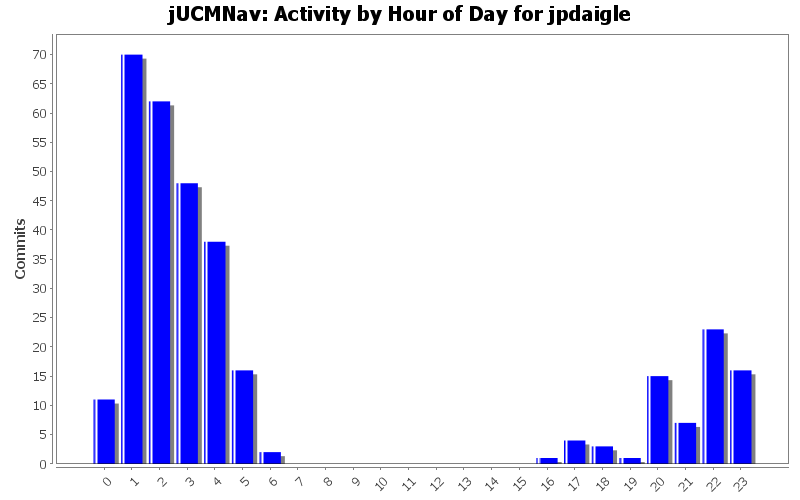
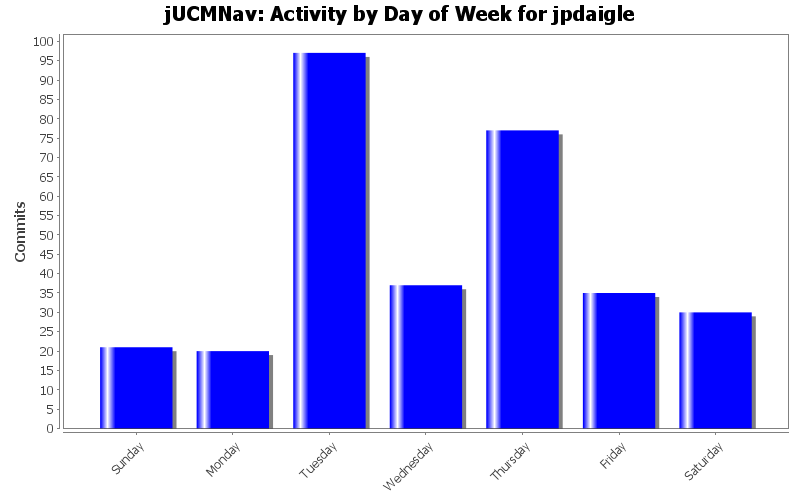
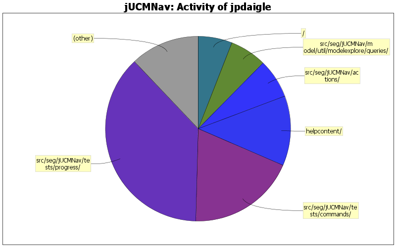

+ Addition of eclipse.org's book.css for nicer and more consistent formatting of documentation. (pulled from twiki)
+ Fixed up the update script to remove "<BASE>" tags from the downloaded HTML documentation.
+ Tweaked deployment instructions to reflect new jar-based deployment, in conformance with new E3.1 plugin packaging standards.
99 lines of code changed in 3 files:
* jUCMNav now fully builds against Eclipse 3.1 installed libs
0 lines of code changed in 1 file:
+ Fix help bug when deployed with base href=""
+ Better build script: smaller artifact outputs, all-in-one jarfile for deployment.
0 lines of code changed in 2 files:
+ Addition of referenced images in helpcontents folder.
* Fixed update script to correctly convert links to relative form and download any images referenced by the page.
0 lines of code changed in 4 files:
+ Including a local version of the monolithic help file for offline browsing.
+ Script for fetching latest version from TWiki site.
+ Build script updates to include help content in deployment package.
+ help.xml updates to refer to local help.
(TODO: images still stored offsite - need to hack the script to change external refs; debug wget -p option)
611 lines of code changed in 4 files:
JP: javadoc improvements on private-visibility methods
0 lines of code changed in 13 files:
A few tweaks / cleanups. This will also serve as build test and setup test for e31 on my laptop.
0 lines of code changed in 4 files:
JP: fix testing scripts for now by fixing version. Need to fix up update site versioning later
0 lines of code changed in 1 file:
Changed comments to trigger a build
0 lines of code changed in 1 file:
JP: My last commit didn't happen for some weird reason.
* .settings (project settings for e31)
* Update site dev
Update site versioning is weird and eclipse is installing several versions of the plugin in parallel right now for some reason, which is disastrous for the end user. Will investigate soon.
64 lines of code changed in 3 files:
Update site xml descriptions
0 lines of code changed in 2 files:
Initial update site scripts. Almost work.
98 lines of code changed in 8 files:
more cruise tests
0 lines of code changed in 1 file:
Another cruise test
0 lines of code changed in 1 file:
Just a test to check if cruisecontrol problems are solved. Have a nice lunch everyone.
0 lines of code changed in 1 file:
Bug 249: Hover feedback on AND-forks/joins. For some reason though, after moving the node the feedback is not cleared.
0 lines of code changed in 2 files:
Fix for Bug 301: allow moving a pathnode when dragging it onto a connection
0 lines of code changed in 1 file:
Fix for missing i18n strings in plugin descriptor... ET forgot to modify the build script when he externalized strings!
0 lines of code changed in 1 file:
Implemented canExecute in the MergeStartEnd command; corrected a bug in the test!!! that made it keep failing.
0 lines of code changed in 2 files:
JP: use new breakiterator algorithm when running javadoc
0 lines of code changed in 1 file:
(68 more)